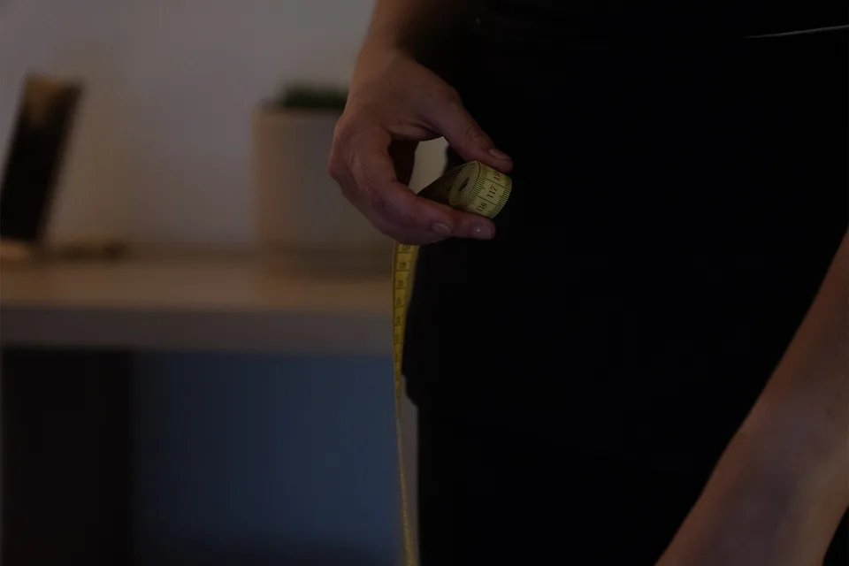
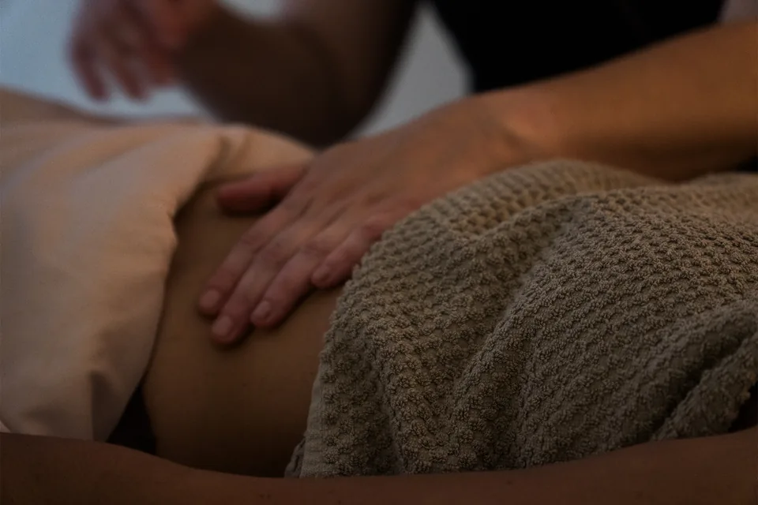
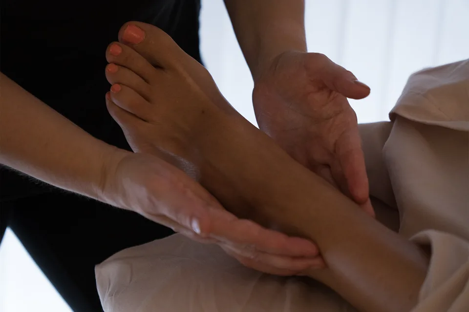

L'Initiale
La séance Initiale est le point de départ de tout accompagnement — elle ne peut pas être remplacée. C'est lors de cette séance que nous apprenons à nous connaître et que je comprends votre corps, vos habitudes et vos objectifs.
Elle se compose d'un bilan personnalisé, d'une prise de mensurations complète et d'une première séance de drainage lymphatique Méthode Nado® — la base de référence de votre suivi.


L'Élan — 5 séances
Un premier protocole progressif pour inscrire le travail dans la durée. Idéal pour découvrir les effets d'un suivi régulier, retrouver légèreté et confort, et mesurer des résultats concrets au fil des séances.
Chaque séance est adaptée à l'évolution de votre corps depuis la précédente.
L'Alignement — 10 séances
Le protocole complet, conçu pour des résultats profonds et durables. Drainage lymphatique ou accompagnement mixte drainage & remodelage de la silhouette — selon vos objectifs.
Ce suivi approfondi permet au corps d'intégrer pleinement les bénéfices de la méthode, avec un point d'étape mesuré à mi-parcours et une réévaluation finale pour objectiver l'évolution.

L'Essentiel
Une séance d'entretien pour prolonger les bienfaits d'un accompagnement terminé, ou accompagner ponctuellement une période de fatigue, de rétention ou de stress.
Réservée aux clientes ayant déjà suivi une séance Initiale, l'Essentiel s'adapte à votre état du moment et à l'évolution de votre corps depuis le dernier soin.
Contre-indications
La Méthode Nado® est douce et non invasive. Certaines situations nécessitent cependant un avis médical préalable, ou contre-indiquent temporairement le drainage. En cas de doute, contactez-moi — je prendrai le temps de vous répondre.
Contre-indications absolues (drainage interdit)
Thrombose veineuse / phlébite non stabilisée
Risque de déplacement du caillot pouvant entraîner une embolie pulmonaire.
Infection aiguë (fièvre, virus, infection bactérienne)
Risque de dissémination de l'infection dans tout l'organisme.
Insuffisance cardiaque décompensée
Le drainage augmente le retour veineux, surchargeant un cœur déjà fragilisé.
Cancer en phase évolutive non stabilisée
Risque théorique de stimulation de la dissémination tumorale.
Contre-indications relatives (drainage possible, avec prudence)
Grossesse (surtout 1er trimestre)
Éviter toute stimulation abdominale. Drainage possible après avis médical, sur jambes et visage uniquement.
Hypertension non contrôlée
Prudence sur la nuque et les zones cervicales.
Asthme sévère
Éviter de stimuler trop intensément la cage thoracique.
Diabète avancé
Vigilance : fragilité tissulaire et sensibilité accrue.
Maladies auto-immunes (ex. lupus)
Adaptation de la fréquence et de l'intensité. Avis médical nécessaire.
Problèmes cutanés actifs (eczéma suintant, plaies, mycoses)
Éviter la zone atteinte.
Un questionnaire préalable est rempli lors de chaque séance Initiale pour vérifier l'absence de contre-indication. En cas de doute, contactez-moi directement.
Commencez par l'Initiale
La séance Initiale est la base de tout accompagnement. 1h30, bilan personnalisé et première séance complète de drainage.